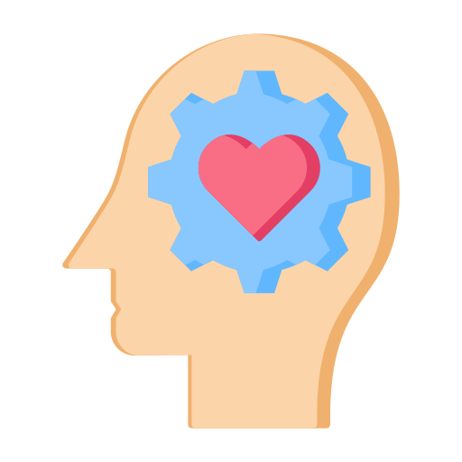

Experiencia

Certificados


Sobre mí
Skills


¡Hola! Soy Thomas, bienvenido a mi portafolio. Haz clic en los íconos para conocer más sobre mí.
Mucho gusto, en este apartado van a conocer sobre mí, a qué me dedico, qué hago en mis tiempos libres y más.
Me llamo Thomas Sebastián Bastos García, tengo 18 años y me dedico al desarrollo de software. Tengo un técnico en software y mi sueño es aprender inglés y ejercer la carrera profesional de software mientras trabajo para una empresa reconocida en el sector.
Soy un desarrollador de software con experiencia en HTML, JavaScript y Python. He trabajado en el desarrollo de proyectos web y aplicaciones funcionales, creando interfaces responsivas e interactivas centradas en la experiencia del usuario. Con Python, he implementado soluciones de automatización y lógica de sistemas. Me considero una persona autodidacta, responsable y con un fuerte interés en el aprendizaje continuo. Además, tengo una excelente capacidad de adaptación al trabajo en equipo y a entornos dinámicos. Actualmente, busco oportunidades para crecer profesionalmente y aplicar mis conocimientos en nuevos desafíos.
Este soy yo :)
Este es mi mundo: el código